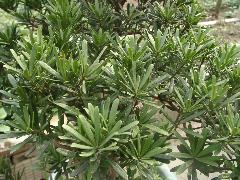

羅漢松
學名：Podocarpus macrophyllus (Thunb.) Sweet
科名：羅漢松科
別名：大葉羅漢松、長青羅漢杉、羅漢杉、羅漢柏
原產地：中國大陸、日本、琉球
特徵：
為常綠中喬木，叢生葉序，葉形為線形單葉，越靠近葉端越尖，越靠近葉基越狹，葉面平滑，革質，葉脈中肋明顯，葉色正面深綠，背面綠色，無葉柄，無葉托。 開黃綠色小花，花小顏色不明顯，春季開花。因果實為青藍色且密佈白粉，其下有紅色肉質肥大的果托，狀似羅漢而得名。
用途：
可做為園藝用植栽，樹幹為建築和雕刻用優良木材，果托可食用。